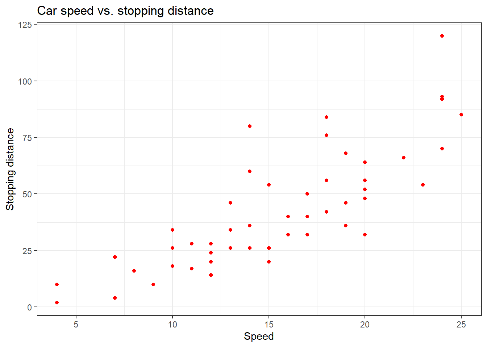
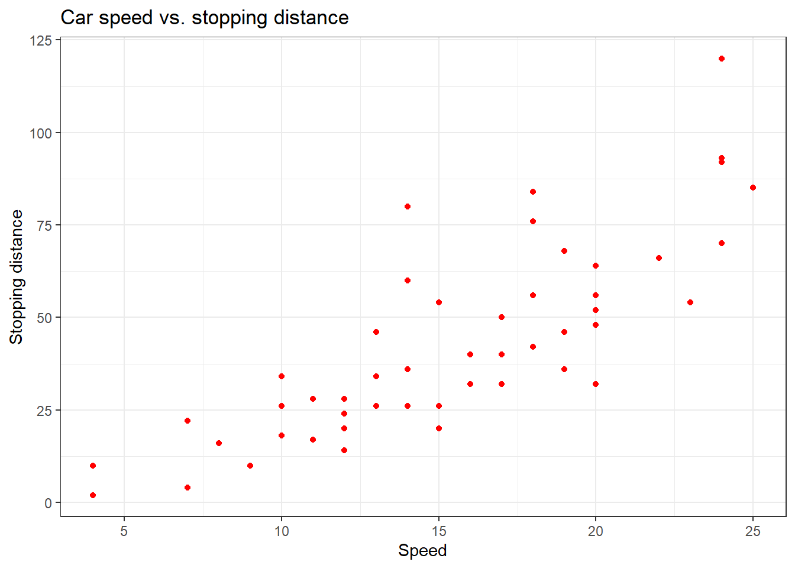
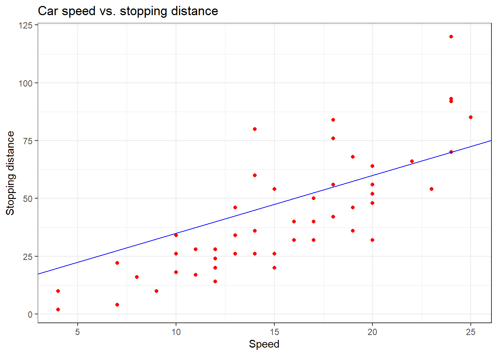
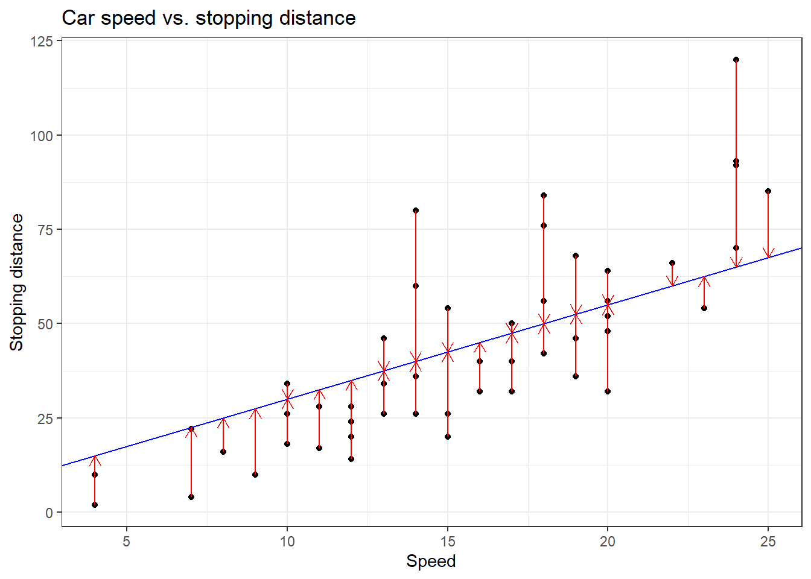
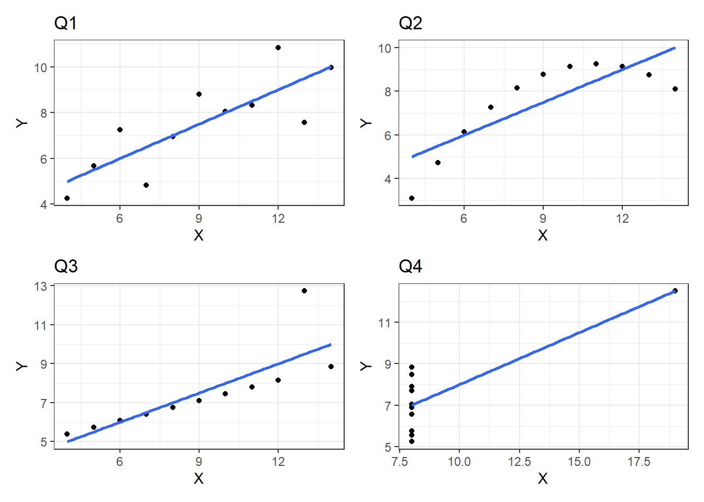

ggplot(cars,aes(x=speed,y=dist)) +
geom_point(color="red") +
xlab("Speed") + ylab("Stopping distance") +
ggtitle("Car speed vs. stopping distance") +
theme_bw() 
For this third tutorial, we are going to
Big disclaimer: the recap on OLS is hugely inspired from Florian Oswald’s and Sciences Po’s introduction to Econometrics with R. The interested student can check this fantastical material here: scpoecon.github.io.
Topic of today: Ordinary Least Square estimator (which is a widely used estimator)
Keep in mind the difference between an estimator \(\hat \beta\) and the observed value \(\beta\). We cannot observe the true parameter, so we estimate it (with error).
We use the cars dataset, in base R, and we are going to relate how speed and stopping distance are related.
ggplot(cars,aes(x=speed,y=dist)) +
geom_point(color="red") +
xlab("Speed") + ylab("Stopping distance") +
ggtitle("Car speed vs. stopping distance") +
theme_bw() 
It seems that a line could be helpful to “summarize” the relation between both variables!
ggplot(cars,aes(x=speed,y=dist)) +
geom_point(color="red") +
geom_abline(intercept=10,slope=2.5,color="blue") +
xlab("Speed") + ylab("Stopping distance") +
ggtitle("Car speed vs. stopping distance") +
theme_bw() 
ggplot(cars, aes(x = speed, y = dist)) +
geom_point(color = "black") +
geom_abline(intercept = 5, slope = 2.5, color = "blue") +
geom_segment(aes(x = speed,
y = dist,
xend = speed,
yend = 5 + 2.5 * speed),
arrow = arrow(length = unit(0.1, "inches")),
color = "red") +
xlab("Speed") +
ylab("Stopping distance") +
ggtitle("Car speed vs. stopping distance") +
theme_bw()
We compute the sum of square distances (\(\sim\) error), so the name “ordinary least square”
An affine function is defined as \(y = \beta_0 + \beta_1 x\) which in matrix form gives \(Y = X\beta\).
Dimension of \(X\)?
The error for each observation is \(e_i = y_i - \beta_0 - \beta_1 x_i\)
Hence, we look for \(\beta\) such that: \[ \beta^\star = \min_\beta (Y - X\beta)'(Y - X\beta) = \min_\beta e'e \]
First order condition: derivative wrt \(\beta\) should be equal to 0
The OLS estimator is then: \[ \hat{\beta} = (X'X)^{-1}X'y \]
Who wants to try to derive it?
Under some conditions, this estimator is the Best Linear Unbiased Estimator (BLUE)
Those conditions will be super helpful later
Major threat is 3 (= endogeneity). Usually it arises from 2 sources:
Then, the OLS estimator is biased and \(E(\widehat\beta)\neq \beta\). Proof in appendix.
It also means that \(Cov(Y,\epsilon)\neq 0\). In other words, that \(y\) and \(\epsilon\) somehow move jointly due to some unobserved factors and not due only to variation due to \(X\).
We will see many ways to tackle this issue.
Extensive presentation of the derivations and the Gauss-Markov theorem here.
A third case leads to an unbiased estimator with higher standard errors (not the best estimator anymore): measurement error. The intuition behind measurement error is more straightforward:
If \(x = x^\star + \delta\) where \(\delta\) is a measurement error with mean 0, then the estimator is still unbiased but the variance is higher and the estimation is leess precise.
\[\small R^2 = \frac{\texttt{Variance explained}}{\texttt{Total variance}} = \frac{\text{Sum of explained square}}{\text{Total sum of square}} = 1 - \frac{\text{Sum of square residuals}}{\text{Total sum of square}} \]
lm. For linear model, the syntax is lm(y ~ x)summary(lm(cars$dist ~ cars$speed))
Call:
lm(formula = cars$dist ~ cars$speed)
Residuals:
Min 1Q Median 3Q Max
-29.069 -9.525 -2.272 9.215 43.201
Coefficients:
Estimate Std. Error t value Pr(>|t|)
(Intercept) -17.5791 6.7584 -2.601 0.0123 *
cars$speed 3.9324 0.4155 9.464 1.49e-12 ***
---
Signif. codes: 0 '***' 0.001 '**' 0.01 '*' 0.05 '.' 0.1 ' ' 1
Residual standard error: 15.38 on 48 degrees of freedom
Multiple R-squared: 0.6511, Adjusted R-squared: 0.6438
F-statistic: 89.57 on 1 and 48 DF, p-value: 1.49e-12The Pr(>|t|) value is also called the p-value. Let’s assume that we want to have a significance level \(\alpha\) of 5%. The underlying statistical test is the following:
\[ \begin{align*} H_0 : \beta = 0 \\ H_1 : \beta \neq 0 \end{align*} \]
where \(\beta\) is the true coefficient.
We want to know if, conditional on the fact that \(H_0\) is true (the true parameter value is 0), \(\widehat \beta = 3.93\) is due to pure chance (then we keep \(H_0\)) or if it cannot be due to chance (and we reject \(H_0\)).
If the p-value falls below the threshold \(\alpha\), then we can confidently assume that the coefficient is significantly different from 0. In other words, we reject the hypothesis that the speed has no influence on the stopping distance at the 5% level.
For more details, you can check this quick note.
Everything should be intepreted everything else equal!
Level-level regression: marginal effect. If \(x\) increases by 1, \(y\) increases by \(\beta\)
Log-log regression: elasticity. If \(x\) increases by 1%, \(y\) increases by \(\beta\)%
Log-level regression: percentage change. If \(x\) increases by 1, \(y\) increases by \(100\beta\)
Level-log regression: level change. If \(x\) increases by 1%, \(y\) increases by \(\beta/100\)
Using Harrod-neutral technological progress, the GDP per capita equation is: \[\small \frac{Y(t)}{L(t)} = K(t)^\alpha (A(t) L(t))^{1-\alpha} \quad \alpha \in \ (0,1) \]
We assume an exogenous growth rate of \(A\) and \(L\) such that: \(A(t) = A(0)e^{gt}\) and \(L(t) = L(0) e^{nt}\).
At the steady-state level:
\[\small \frac{Y}{L} = A(0)e^{gt}\left(\frac{s}{n + g + \delta}\right)^{\alpha/(1-\alpha)} \]
No. Solution?
Log-linearize it (at time 0)
\[ \log (Y/L) = \log(A(0)) + \left(\frac{\alpha}{1-\alpha}\right)\log s - \left(\frac{\alpha}{1-\alpha}\right) \log(n + g + \delta) \]
Because we do not observe all data, we can only estimate the parameters. Hence, the empirical model we estimate is:
\[ \log (Y_i/L_i) = \beta_0 + \beta_1 \log s_i + \beta_2 \log(n + g + \delta) + \epsilon_i \]
where \(\beta_0 + \epsilon_i = \log A(0)\), and \(\epsilon_i\) is an error term capturing everything not captured in the model.
We can, or not, assume that \(\beta_1 = -\beta_2\). This is an empirical prediction we might want to test.
dplyr and ggplot2)Assume \(g+\delta=0.05\).
linearHypothesis() from the package car, you can set an hypothesis testing to check if the sum of the coefficient is equal to 0.school.g1 = ggplot(datasets::anscombe,aes(x=x1,y=y1)) +
geom_point(color="black") +
geom_smooth(method = "lm",se=F) +
theme_bw() +
xlab("X") + ylab("Y") + ggtitle("Q1")
g2 = ggplot(datasets::anscombe,aes(x=x2,y=y2)) +
geom_point(color="black") +
geom_smooth(method = "lm",se=F) +
theme_bw() +
xlab("X") + ylab("Y") + ggtitle("Q2")
g3 = ggplot(datasets::anscombe,aes(x=x3,y=y3)) +
geom_point(color="black") +
geom_smooth(method = "lm",se=F) +
theme_bw() +
xlab("X") + ylab("Y") + ggtitle("Q3")
g4 = ggplot(datasets::anscombe,aes(x=x4,y=y4)) +
geom_point(color="black") +
geom_smooth(method = "lm",se=F) +
theme_bw() +
xlab("X") + ylab("Y") + ggtitle("Q4")
(g1 | g2) /
(g3 | g4)`geom_smooth()` using formula = 'y ~ x'
`geom_smooth()` using formula = 'y ~ x'
`geom_smooth()` using formula = 'y ~ x'
`geom_smooth()` using formula = 'y ~ x'
Omitted Variable Bias (OVB) occurs when a relevant variable is left out of a regression model, leading to biased and inconsistent estimators. Here, we formally prove the presence of bias in the Ordinary Least Squares (OLS) estimator due to an omitted variable.
Consider the true model: \(Y = \beta_0 + \beta_1 X_1 + \beta_2 X_2 + \epsilon\) where \(Y\) is the dependent variable, \(X_1\) and \(X_2\) are explanatory variables, \(\epsilon\) is the error term with \(E[\epsilon | X_1, X_2] = 0\).
Now, suppose \(X_2\) is omitted from the regression. The estimated model is: \[ Y = \alpha_0 + \alpha_1 X_1 + u \]
where the new error term \(u\) is: \(u = \beta_2 X_2 + \epsilon\). Since \(X_2\) is omitted, we express it in terms of \(X_1\) using the linear projection:
\[ X_2 = \gamma_0 + \gamma_1 X_1 + v \]
where \(v\) is the residual such that \(E[v | X_1] = 0\).
Substituting this into the omitted equation:
\[ u = \beta_2 (\gamma_0 + \gamma_1 X_1 + v) + \epsilon \]
\[ u = \beta_2 \gamma_0 + \beta_2 \gamma_1 X_1 + \beta_2 v + \epsilon \]
Since \(u\) is correlated with \(X_1\), the OLS estimator for \(\alpha_1\) (which is another way to write an estimator) is:
\[ \hat{\alpha}_1 = \frac{Cov(Y, X_1)}{Var(X_1)} \]
Substituting \(Y\) from the true model:
\[ \hat{\alpha}_1 = \frac{Cov(\beta_0 + \beta_1 X_1 + \beta_2 X_2 + \epsilon, X_1)}{Var(X_1)} \]
Expanding covariance terms:
\[ \hat{\alpha}_1 = \beta_1 + \beta_2 \frac{Cov(X_2, X_1)}{Var(X_1)} \]
Using the projection equation:
\[ \hat{\alpha}_1 = \beta_1 + \beta_2 \gamma_1 \]
Since \(\gamma_1 \neq 0\) if \(X_1\) and \(X_2\) are correlated, and \(\beta_2 \neq 0\) if \(X_2\) is relevant, it follows that:
\[ E[\hat{\alpha}_1] \neq \beta_1 \]
Thus, the OLS estimator is biased due to the omission of \(X_2\). Another way of seeing it on these slides.